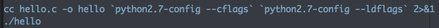

把R 和Python 串起來
正港R皮Py骨
Wush Wu
Taiwan R User Group
前言
關於講者
Taiwan R User Group
熱愛R
因為某個原因，寫Python時心裡不舒服
關於R 社群
每週一晚上舉辦MLDM Monday
歡迎所有和資料相關的故事
為什麼要串Python?
因為Python在處理中文上比R 方便很多
個人在R 裡面寫Python
心裡的不舒適感就消失了
在R和Python的串接上
已經有RPy2可以在Python裡面呼叫R
但是這對敝人小弟在下我來說
非常的讓人不舒服
在R中呼叫Python
傳說中有RSPython
然而小弟我有個缺點：
第一次的使用經驗就是全部
所以...
即使我是Python外行
Python的官網實在太強了
Embedding Python in Another Application
#include <Python.h>
int
main(int argc, char *argv[])
{
Py_SetProgramName(argv[0]); /* optional but recommended */
Py_Initialize();
PyRun_SimpleString("from time import time,ctime\n"
"print 'Today is',ctime(time())\n");
Py_Finalize();
return 0;
}
根據最近搞Tutorial的心得
要讓code在別人的電腦能跑非常的困難
讓我們來瞧瞧這段code能不能跑
cc hello.c -o hello 2>&1
## hello.c:1:10: fatal error: 'Python.h' file not found
## #include <Python.h>
## ^
## 1 error generated.
5.6. Compiling and Linking under Unix-like systems
pythonX.Y-config --cflagspythonX.Y-config --ldflags

## Today is Wed Aug 27 23:45:03 2014
Windows?
距離成功已經不遠
#include <Python.h>
int
main(int argc, char *argv[])
{
Py_SetProgramName(argv[0]); /* optional but recommended */
Py_Initialize();
PyRun_SimpleString("from time import time,ctime\n"
"print 'Today is',ctime(time())\n");
Py_Finalize();
return 0;
}
GNU R

主要工作用的工具
擅長於資料分析
Python 擁有一些R 缺乏的功能：
boto: AWS Client
Data Cleaning
透過Rcpp寫一些C++函數來：
啟動Python Interpreter
Py_Initialize
傳遞指令到Python
PyRun_SimpleString
關閉Python Interpreter
Py_Finalize
#include <Rcpp.h>
#include <Python.h>
using namespace Rcpp;
//[[Rcpp::export]]
void initialize_python() {
Py_SetProgramName(""); /* optional but recommended */
Py_Initialize();
}
在R 之中編譯和連結並不困難...
py_cflags <- system("python2.7-config --cflags", intern=TRUE)
Sys.setenv("PKG_CFLAGS"=sprintf("%s %s", Sys.getenv("PKG_CFLAGS"), py_cflags))
Sys.setenv("PKG_CXXFLAGS"=sprintf("%s %s -I/opt/local/include", Sys.getenv("PKG_CXXFLAGS"), py_cflags))
py_ldflags <- system("python2.7-config --ldflags", intern=TRUE)
# mac ports
Sys.setenv("PKG_LIBS"=sprintf("%s %s %s", Sys.getenv("PKG_CFLAGS"),
"-L /opt/local/lib -lboost_python-mt", py_ldflags))
# ubuntu
# Sys.setenv("PKG_LIBS"=sprintf("%s %s %s", Sys.getenv("PKG_CFLAGS"),
# "-lboost_python-py27", py_ldflags))
因為是Python的場子
就不多說R, Rcpp的編譯細節
打開Python
#include <Rcpp.h>
#include <Python.h>
using namespace Rcpp;
//[[Rcpp::export]]
void initialize_python() {
Py_SetProgramName(""); /* optional but recommended */
Py_Initialize();
}
關閉Python
#include <Rcpp.h>
#include <Python.h>
using namespace Rcpp;
//[[Rcpp::export]]
void finalize_python() {
Py_Finalize();
}
Hello World
#include <Rcpp.h>
#include <Python.h>
using namespace Rcpp;
//[[Rcpp::export]]
void hello_python() {
PyRun_SimpleString("from time import time,ctime\n"
"print 'Today is',ctime(time())\n");
}
#include <Rcpp.h>
#include <Python.h>
using namespace Rcpp;
//[[Rcpp::export]]
void py(const std::string& cmd) {
PyRun_SimpleString(cmd.c_str());
}
試跑
initialize_python()
hello_python()
py("print 'hello world'")
## Today is Wed Aug 27 23:45:20 2014
## hello world
R 和Python的資料交換
Rcpp: R <====> C++
Boost.Python: Python <====> C++
| R | Rcpp | Python |
|---|---|---|
| integer | IntegerVector | List |
| numeric | NumericVector | List |
| character | CharacterVector | List |
| raw | RawVector | List |
IntegerVector ==> Python List
#include <Rcpp.h>
#include <boost/python/raw_function.hpp>
namespace py = boost::python;
typedef Rcpp::XPtr<py::list> PyList; // 將記憶體交給R的GC管理
using namespace Rcpp;
//[[Rcpp::export]]
SEXP IntVec_to_py_list(IntegerVector src) {
PyList pretval(new py::list()); // 建立物件
int glue;
for(int i = 0;i < src.size();i++) {
glue = src[i];
pretval->append(glue); // 等同於 list.append
}
return pretval;
}
x <- IntVec_to_py_list(1:10)
print(x)
## <pointer: 0x7f9bf9619bf0>
將R 管理的Python物件傳給Python
#include <Rcpp.h>
#include <Python.h>
#include <boost/python/raw_function.hpp>
namespace py = boost::python;
typedef Rcpp::XPtr<py::list> PyList;
using namespace Rcpp;
//[[Rcpp::export]]
void pyfun(std::string fun_name, SEXP fun_argument) {
// 建立__main__的參照
py::object module((py::handle<>(py::borrowed(PyImport_AddModule("__main__")))));
// 在__main__找 fun_name並回傳參照
py::object pyfun = module.attr("__dict__")[fun_name.c_str()];
// 將R的物件轉換成python物件
py::list argv(*PyList(fun_argument));
// 呼叫
pyfun(argv);
}
py("
def print_list(list):
for a in list:
print a
")
pyfun("print_list", x)
## 1
## 2
## 3
## 4
## 5
## 6
## 7
## 8
## 9
## 10
錯誤處理
#include <Rcpp.h>
#include <Python.h>
#include <boost/python/raw_function.hpp>
namespace py = boost::python;
typedef Rcpp::XPtr<py::list> PyList;
//[[Rcpp::export]]
void pyfun(std::string fun_name, SEXP fun_argument) {
try {
py::object module((py::handle<>(py::borrowed(PyImport_AddModule("__main__")))));
py::object pyfun = module.attr("__dict__")[fun_name.c_str()];
py::list argv(*PyList(fun_argument));
pyfun(argv);
}
catch (py::error_already_set) { // Python的Exception轉換為C++ Exception
PyErr_Print(); // 印出錯誤訊息
}
}
py("
def print_list(src):
for i in src:
print i
")
a <- IntVec_to_py_list(1:10)
pyfun("print_lists", a) # 打錯函數名稱
## KeyError: 'print_lists'
實例分享
一年多前的實驗結果：
Rython, 一個R 呼叫Python的套件
https://github.com/wush978/Rython
It works on My Machine
Data Cleaning
def clean_data(filename):
# ...
raw_data <- pyfun("clean_data", path)
AWS API
# 在R 把資料整理好之後...
py("import boto")
# 開始把資料往雲端打
Q&A